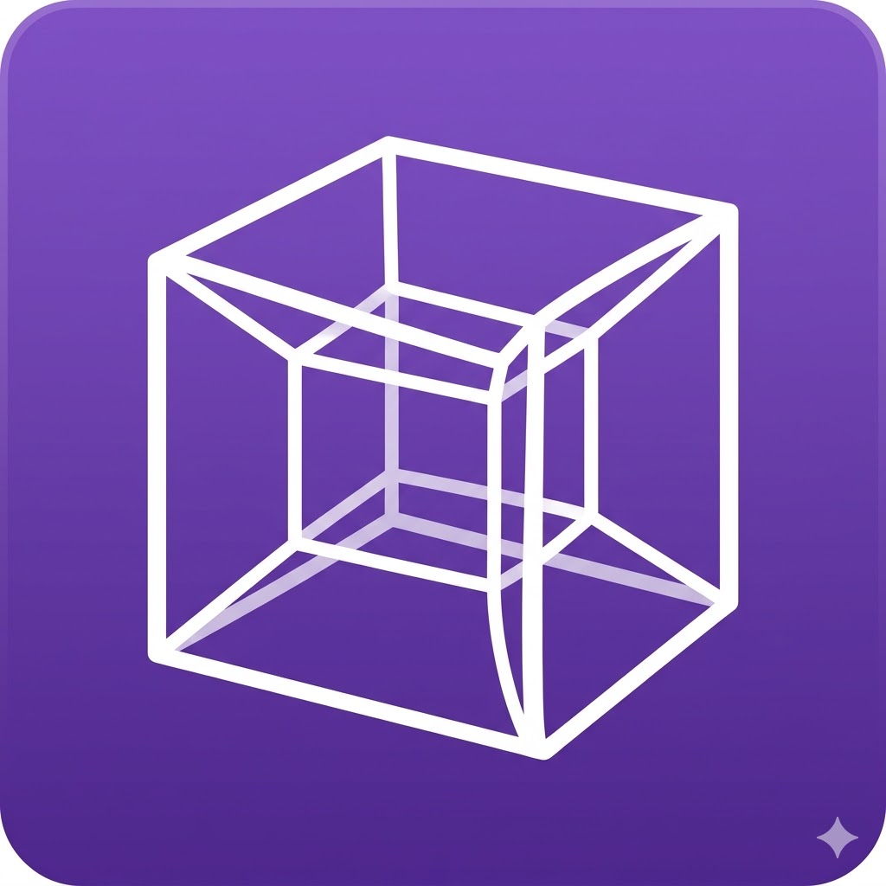

MATRİS YÜKLENIYOR...
LİNEER CEBİR VE ANTİ-YERÇEKİMİ GÖRSELLEŞTİRMESİ
Matematiksel Dönüşüm Uzayı
ROTASYON MATRİSİ
[
0.866
-0.500
0.000
0.500
0.866
0.000
0.000
0.000
1.000
]
M = Rz(θ) · Ry(φ)
θ =
30.0
°
φ =
0.0
°
DÖNÜŞÜM VEKTÖRLERİ
Konum:
[0.0, 2.5, 0.0]
Ölçek:
[1.0, 1.0, 1.0]
Kaldırma:
[0.0, 1.0, 0.0]
ANTİ-YERÇEKİMİ KUVVETİ
F = 9.81 m/s²
ÖZGÜN ŞEKİL
DÖNÜŞMÜŞ ŞEKİL
(ANTİ-YERÇEKİMİ ETKİSİ)
İZDÜŞÜM DÜZLEMİ
◈
Fare ile döndür
⊕
Scroll ile yakınlaş
↻
Otomatik Döndür: AÇIK
☰
Ölçekleme
S·v = λv
Determinant
det(M) =
1.000
Öz Değer
λ₁ =
0.866+0.5i
İz (Trace)
tr(M) =
2.732
Norm
‖v‖ =
1.000
×
